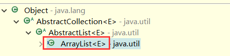
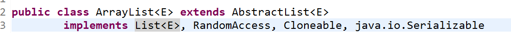
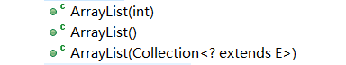
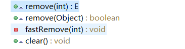

首先来总结一下，ArrayList的一些特点：
1.arraylist本质上就是一个elementData数组，它允许对元素进行快速随机访问，可以存放null值；
2.arraylist区别于数组的地方在于能够自动扩展大小，其中关键就是grow() 方法，每次扩充后数组为原来数组的1.5倍；
3.arraylist由于本质是数组，所以它在数据的查询方面会很快，而在插入删除方面，性能会下降很多，要移动很多数据才能达到应有的效果；
4.arraylist中的removeAll(collection c)和clear() 的区别就是removeAll可以删除批量指定的元素，而clear是全部删除集合中的元素；
5.arraylist实现了RandomAccess，所以在遍历时推荐使用for循环；
6.arraylist是线程不安全的；
一、继承结构和层次关系


由图可以看出，ArrayList 继承于AbstractList；AbstractList 继承于AbstractCollection；所有类都继承于Object。
1.为什么要先继承AbstractList，让AbstractList先实现List<E>，而不是让ArrayList直接实现List<E>？
接口中全都是抽象的方法，而抽象类中可以有抽象方法，还可以有具体的实现方法，让AbstractList实现接口中一些通用的方法，而具体的类，如ArrayList就继承这个AbstractList类，拿到一些通用的方法，然后自己再实现一些自己特有的方法。
2.ArrayList实现了那些接口？
List<E>接口
RandomAccedd接口：是一个标记性接口，作用是用来快速随机存取。若实现了该接口，使用普通的for循环来遍历，性能更高，例如arraylist。而没有实现该方法的接口，使用iterator来迭代，这样性能更高，例如LinkedList。
Cloneable接口：实现了该接口，就可以使用Object.Clone()方法。
Serializable接口：实现该序列化接口，表明该类可以被序列化。
二、构造方法

1.无参构造方法
1 //这里就说明了默认会给10的大小，所以说一开始arrayList的容量是10.
2 //ArrayList中储存数据的其实就是一个数组，这个数组就是elementData，在123行定义的 private transient Object[] elementData;
3 public ArrayList() {
4 super(); //调用父类中的无参构造方法，父类中的是个空的构造方法
5 this.elementData = EMPTY_ELEMENTDATA; //EMPTY_ELEMENTDATA：是个空的Object[]， 将elementData初始化，elementData也是个Object[]类型。空的Object[]会给默认大小10。
6 }2.有参构造方法1
1 public ArrayList(int initialCapacity) {
2 super(); //父类中空的构造方法
3 if (initialCapacity < 0) //判断如果自定义大小的容量小于0，则报非法数据异常
4 throw new IllegalArgumentException("Illegal Capacity: "+initialCapacity);
5 this.elementData = new Object[initialCapacity]; //将自定义的容量大小当成初始化elementData的大小
6 }3.有参构造方法2（不常用）
1 //我还有一个Collection<Student>、由于这个Student继承了Person，那么根据这个构造方法，我就可以把这个Collection<Student>转换为ArrayList<Sudent>这就是这个构造方法的作用
2 public ArrayList(Collection<? extends E> c) {
3 elementData = c.toArray(); //转换为数组
4 size = elementData.length; //数组中的数据个数
5 if (elementData.getClass() != Object[].class) //每个集合的toarray()的实现方法不一样，所以需要判断一下，如果不是Object[].class类型，那么就需要使用ArrayList中的方法去改造一下。
6 elementData = Arrays.copyOf(elementData, size, Object[].class);
7 }
三、常用方法
1.add方法
boolean add(E)；//默认直接在末尾添加元素
1 public boolean add(E e) {
2 //确定内部容量是否够了，size是数组中数据的个数，因为要添加一个元素，所以size+1，先判断size+1的这个数数组能否放得下，就在这个方法中去判断是否数组.length是否够用了。
3 ensureCapacityInternal(size + 1);
4 //在数据中正确的位置上放上元素e，并且size++
5 elementData[size++] = e;
6 return true;
7 }ensureCapacityInternal(xxx);
1 private void ensureCapacityInternal(int minCapacity) {
2 if (elementData == EMPTY_ELEMENTDATA) { //判断初始化的elementData是不是空的数组，也就是没有长度。因为如果是空的话，minCapacity=size+1；其实就是等于1，空的数组没有长度就存放不了，所以就将minCapacity变成10，也就是默认大小，但是在这里，还没有真正的初始化这个elementData的大小。
3 minCapacity = Math.max(DEFAULT_CAPACITY, minCapacity);
4 }
5 //确认实际的容量，上面只是将minCapacity=10，这个方法就是真正的判断elementData是否够用
6 ensureExplicitCapacity(minCapacity);
7 }ensureExplicitCapacity(xxx);
1 private void ensureExplicitCapacity(int minCapacity) {
2 modCount++;
3 //minCapacity如果大于了实际elementData的长度，那么就说明elementData数组的长度不够用，不够用那么就要增加elementData的length。
4 /*第一种情况：由于elementData初始化时是空的数组，那么第一次add的时候，minCapacity=size+1；也就minCapacity=1，在上一个方法(确定内部容量ensureCapacityInternal)就会判断出是空的数组，就会将minCapacity=10，到这一步为止，还没有改变elementData的大小，
5 第二种情况：elementData不是空的数组了，那么在add的时候，minCapacity=size+1；也就是minCapacity代表着elementData中增加之后的实际数据个数，拿着它判断elementData的length是否够用，如果length不够用，那么肯定要扩大容量，不然增加的这个元素就会溢出。
6 */
7 if (minCapacity - elementData.length > 0)
8 grow(minCapacity); //arrayList能自动扩展大小的关键方法就在这里了
9 }grow(xxx); //arraylist核心的方法，能扩展数组大小的关键。
1 private void grow(int minCapacity) {
2 int oldCapacity = elementData.length; //将扩充前的elementData大小给oldCapacity
3 int newCapacity = oldCapacity + (oldCapacity >> 1); //newCapacity就是1.5倍的oldCapacity
4 if (newCapacity - minCapacity < 0)//这句话就是适应于elementData为空数组的时候，length=0，那么oldCapacity=0，newCapacity=0，所以这个判断成立，在这里就是真正的初始化elementData的大小了，就是为10。
5 newCapacity = minCapacity;
6 if (newCapacity - MAX_ARRAY_SIZE > 0)//如果newCapacity超过了最大的容量限制，就调用hugeCapacity，也就是将能给的最大值给newCapacity
7 newCapacity = hugeCapacity(minCapacity);
8 //新的容量大小已经确定好了，就copy数组，改变容量大小。
9 elementData = Arrays.copyOf(elementData, newCapacity);
10 }hugeCapacity();
1 //这个就是上面用到的方法，就是用来赋最大值。
2 private static int hugeCapacity(int minCapacity) {
3 if (minCapacity < 0)
4 throw new OutOfMemoryError();
5 //如果minCapacity都大于MAX_ARRAY_SIZE，那么就Integer.MAX_VALUE返回，反之将MAX_ARRAY_SIZE返回。因为maxCapacity是三倍的minCapacity，可能扩充的太大了，就用minCapacity来判断了。
6 //Integer.MAX_VALUE:2147483647 MAX_ARRAY_SIZE：2147483639 也就是说最大也就能给到第一个数值。还是超过了这个限制，就要溢出了。相当于arraylist给了两层防护。
7 return (minCapacity > MAX_ARRAY_SIZE) ?Integer.MAX_VALUE : MAX_ARRAY_SIZE;
8 }
void add(int ,E); //在特定的位置添加元素，也就是插入元素
1 public void add(int index, E element) {
2 rangeCheckForAdd(index);//检查index也就是插入的位置是否合理。
3 //跟上面的分析一样，具体看上面
4 ensureCapacityInternal(size + 1);
5 //这个方法就是用来在插入元素之后，要将index之后的元素都往后移一位，
6 System.arraycopy(elementData, index, elementData, index + 1, size - index); // System.arraycopy(...)：就是将elementData在插入位置后的所有元素往后面移一位
7 //在目标位置上存放元素
8 elementData[index] = element;
9 size++; //size增加1
10 }rangeCheckForAdd(index)
1 private void rangeCheckForAdd(int index) {
2 if (index > size || index < 0) //插入的位置肯定不能大于size 和小于0
3 //如果是，就报这个越界异常
4 throw new IndexOutOfBoundsException(outOfBoundsMsg(index));
5 }
2.删除方法

remove(int) 方法：通过删除指定位置上的元素
1 public E remove(int index) {
2 rangeCheck(index);//检查index的合理性
3 modCount++;//这个作用很多，比如用来检测快速失败的一种标志。
4 E oldValue = elementData(index);//通过索引直接找到该元素
5 int numMoved = size - index - 1;//计算要移动的位数。
6 if (numMoved > 0)
7 //这个方法也已经解释过了，就是用来移动元素的。
8 System.arraycopy(elementData, index+1, elementData, index, numMoved);
9 //将--size上的位置赋值为null，让gc(垃圾回收机制)更快的回收它。
10 elementData[--size] = null;
11 //返回删除的元素。
12 return oldValue;
13 }remove(Object)：这个方法可以看出来，arraylist是可以存放null值的。
1 //就是通过元素来删除该元素，就依次遍历，如果有这个元素，就将该元素的索引传给fastRemobe(index)，使用这个方法来删除该元素，fastRemove(index)方法的内部跟remove(index)的实现几乎一样，这里最主要是知道arrayList可以存储null值。
2 public boolean remove(Object o) {
3 if (o == null) {
4 for (int index = 0; index < size; index++)
5 if (elementData[index] == null) {
6 fastRemove(index);
7 return true;
8 }
9 } else {
10 for (int index = 0; index < size; index++)
11 if (o.equals(elementData[index])) {
12 fastRemove(index);
13 return true;
14 }
15 }
16 return false;
17 }clear()：将elementData中每个元素都赋值为null，等待垃圾回收将这个给回收掉，所以叫clear；
1 public void clear() {
2 modCount++;
3 for (int i = 0; i < size; i++)
4 elementData[i] = null;
5 size = 0;
6 }removeAll(collection c)
1 public boolean removeAll(Collection<?> c) {
2 return batchRemove(c, false);//批量删除
3 }其中的batchRemove(xx,xx)：用于两个方法，一个removeAll()：它只清楚指定集合中的元素，retainAll() 用来测试两个集合是否有交集。
1 //这个方法，用于两处地方，如果complement为false，则用于removeAll；如果为true，则给retainAll()用
2 private boolean batchRemove(Collection<?> c, boolean complement) {
3 final Object[] elementData = this.elementData; //将原集合，记名为A
4 int r = 0, w = 0; //r用来控制循环，w是记录有多少个交集
5 boolean modified = false;
6 try {
7 for (; r < size; r++)
8 //参数中的集合C一次检测集合A中的元素是否有，
9 if (c.contains(elementData[r]) == complement)
10 //有的话，就给集合A
11 elementData[w++] = elementData[r];
12 } finally {
13 //如果contains方法使用过程报异常
14 if (r != size) {
15 //将剩下的元素都赋值给集合A，
16 System.arraycopy(elementData, r, elementData, w, size - r);
17 w += size - r;
18 }
19 if (w != size) {
20 //这里有两个用途，在removeAll()时，w一直为0，就直接跟clear一样，全是为null。
21 //retainAll()：没有一个交集返回true，有交集但不全交也返回true，而两个集合相等的时候，返回false，所以不能根据返回值来确认两个集合是否有交集，而是通过原集合的大小是否发生改变来判断，如果原集合中还有元素，则代表有交集，而元集合没有元素了，说明两个集合没有交集。
22
23 for (int i = w; i < size; i++)
24 elementData[i] = null;
25 modCount += size - w;
26 size = w;
27 modified = true;
28 }
29 }
30 return modified;
31 }